Captiva | ||||||||
| ||||||||
Aplicación | Especificación |
Tipo de lubricante | Lubricante sintético 75W-90 para engranajes de tipo hipoide |
Capacidad de lubricante (llenado de la caja de transferencia) | 0,8 ± 0,1 L (0,85 ± 0,1 qt) |
Relación de cambio | 2.535 : 1 |
| Aplicación | N•m | Árbol de transmisión izquierdo | Articulación |
| Tapón de drenaje de la caja de transferencia | 39 | 29 | - |
| Tapón de llenado de la caja de transferencia | 39 | 29 | - |
| Tornillos intermedios de la caja de transferencia | 29 | 21 | - |
| Tornillos del escudo térmico de la caja de transferencia | 11 | - | 97 |
| Tuerca del engranaje conductor de salida trasero de la caja de transferencia | 235 | 173 | - |
| Tornillos del alojamiento del eje de accionamiento de salida trasero de la caja de transferencia | 29 | 21 | - |
| Tornillos del soporte de fijación trasero de la caja de cambios | 90 | 66 | - |
| Tornillo de la fijación trasera de la caja de cambios al soporte | 90 | 66 | - |
| Tuerca y tornillos de fijación del soporte trasero de la caja de cambios | 90 | 66 | - |
| Tornillos de la parte inferior de la caja de transferencia | 75 | 55 | - |
| Tornillo de la parte superior de la caja de transferencia | 75 | 55 | - |
| Tornillos del anclaje de la caja de transferencia (para todos los motores) | 60 | 44 | - |
| Tornillos del soporte de la caja de transferencia (Rótulo: 5) (para todos los motores) | 60 | 44 | - |
| Tornillo del soporte de la caja de transferencia (Rótulo : 6) (sólo para HFV6 3.2L) | 40 | 30 | - |
| 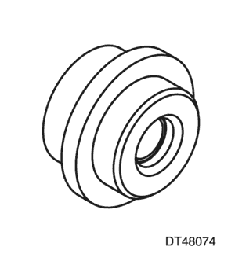  | DT - 48074 Instalador del retén del eje de entrada y salida |
| 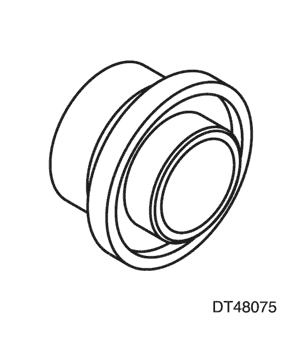  | DT - 48075 Instalador del retén del eje de salida |
| 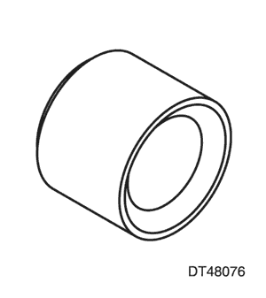  | DT - 48076 Instalador del protector de impactos |
| 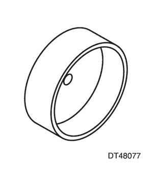  | DT - 48077 Instalador del anillo recogelubricante del eje de salida |
| 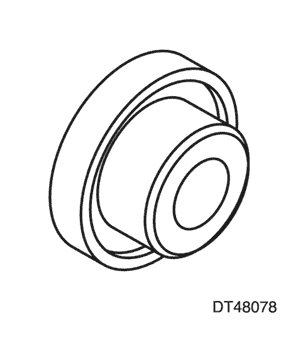  | DT - 48078 Instalador del retén del eje de accionamiento interior |
| 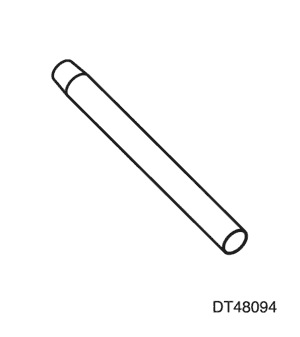  | DT - 48094 Protector del retén del eje de accionamiento interior |
| 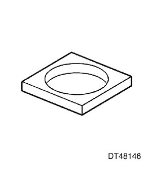  | DT - 48146 Soporte de prensa |
| 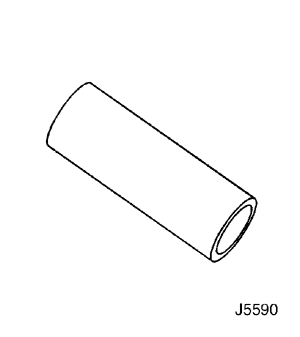  | J-5590 Instalador de la pista del cojinete del piñón - trasero |
| 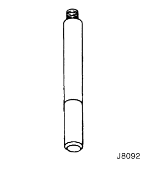  | J-8092 mango del botador |
| 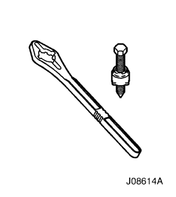  | J-08614-A Extractor y soporte de la brida del piñón |
| 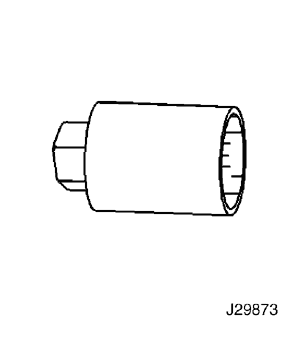  | J-29873 Casquillo de la boquilla del inyector de 30 mm |
| 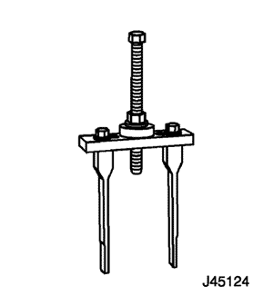  | J-45124 Puente de desmontaje |
| 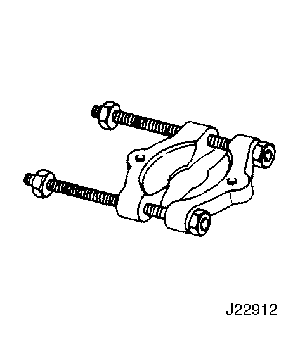  | J-22912-01 Extractor universal de cojinetes |
| 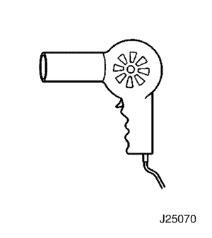  | J-25070 Pistola de calentamiento - 500 - 750 F |
| 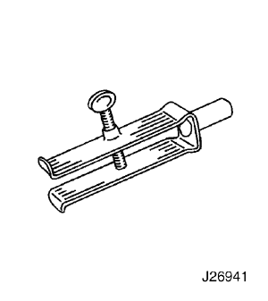  | J-26941 Extractor de casquillo y cojinete |
Causa | Medida correctora |
Compruebe los niveles de aceite del engranaje y la caja de cambios antes de efectuar un diagnóstico del sistema. Consulte el apartado Cambio del aceite de la caja de transferencia. | |
Agua o suciedad en el lubricante La presencia de agua o suciedad en el lubricante, puede causar un patinaje excesivo del embrague del convertidor de par y provocar un chirrido o gruñido en del diferencial trasero en condiciones de carga ligera o estable. | Sustituya el lubricante y lave la caja de transferencia para eliminar el aceite contaminado. |
Tornillos de fijación del eje de transmisión | Apriete los tornillos según sea necesario. |
Juntas homocinéticas del eje de transmisión desgastadas | Sustituya el conjunto del eje de transmisión. |
Juntas homocinéticas del palier desgastadas | Sustituya las juntas homocinéticas según sea necesario. |
Aceite de engranaje incorrecto en la caja de transferencia. | Sustituya el aceite del engranaje. |
Ruido de cojinetes en la caja de transferencia Un ruido similar a un chirrido o bramido que aumenta o disminuye en función de la velocidad del vehículo. |
|
Gemido del engranaje de la caja de transferencia Los ruidos similares a gemidos aumentarán o disminuirán en función de la velocidad del vehículo. |
|
Causa | Medida correctora |
Compruebe los niveles de aceite del engranaje y la caja de cambios antes de efectuar un diagnóstico del sistema. Consulte el apartado Cambio del aceite de la caja de transferencia. | |
Tornillos de fijación del eje de transmisión | Apriete los tornillos según sea necesario. |
Juntas homocinéticas del eje de transmisión desgastadas | Sustituya el conjunto del eje de transmisión. |
Juntas homocinéticas del palier desgastadas | Sustituya las juntas homocinéticas según sea necesario. |
Aceite de engranaje incorrecto en la caja de transferencia. | Sustituya el aceite del engranaje. |
Ruido de cojinetes en la caja de transferencia Un ruido similar a un chirrido o bramido que aumenta o disminuye en función de la velocidad del vehículo. |
|
Gemido del engranaje de la caja de transferencia Los ruidos similares a gemidos aumentarán o disminuirán en función de la velocidad del vehículo. |
|
Causa | Medida correctora |
Compruebe los niveles de aceite del engranaje y la caja de cambios antes de efectuar un diagnóstico del sistema. Consulte el apartado Cambio del aceite de la caja de transferencia. | |
Tornillos de fijación del eje de transmisión | Apriete los tornillos según sea necesario. |
Aceite del engranaje incorrecto | Sustituya el aceite del engranaje. |
Causa | Medida correctora |
Compruebe los niveles de aceite del engranaje y la caja de cambios antes de efectuar un diagnóstico del sistema. Consulte el apartado Cambio del aceite de la caja de transferencia. | |
Niveles bajos del aceite del engranaje | Retenes de aceite defectuosos u otro tipo de fuga externa que puede contribuir a disminuir el nivel necesario de aceite. Consulte el apartado Diagnóstico de fugas de la caja de transferencia. Añada aceite del engranaje hasta el nivel correcto. |
Juntas homocinéticas del eje de transmisión desgastadas | Sustituya el conjunto del eje de transmisión. |
Ruido de cojinetes en la caja de transferencia Un ruido similar a un chirrido o bramido que aumenta o disminuye en función de la velocidad del vehículo. |
|
Gemido del engranaje de la caja de transferencia Los ruidos similares a gemidos aumentarán o disminuirán en función de la velocidad del vehículo. |
|
Causa | Medida correctora |
Tapón de drenaje y/o llenado desgastado, rayado o que falta | Instale nuevos tapones y apriételos según las especificaciones. |
Retén de aceite del eje de salida o entrada desgastado o dañado | Sustituya el retén de aceite del eje de salida según sea necesario. |
Junta tórica del alojamiento de salida dañada o cortada | Sustituya la junta tórica si fuera necesario. |
Retenes de aceite del eje interior desgastados Los retenes de aceite del eje interior desgastados o dañados pueden detectarse por una fuga de aceite en la zona del orificio de ventilación situado en la parte inferior de la cubierta. | Sustituya los retenes de aceite si fuera necesario. |
Juntas tóricas del conjunto de la caja de cambios a la caja de transferencia dañadas o cortadas | Sustituya las juntas tóricas si fuera necesario. |
Porosidad en las cajas o alojamientos o superficies de junta que presentan fugas | Sustituya el conjunto de la caja de transferencia en caso de que no pueda repararse. |

| © Copyright Chevrolet Europe. Reservados todos los derechos |